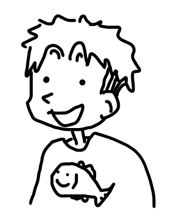

伊藤 聡志
年齢：31歳（1995年3月生まれ）
出身：愛知県安城市
趣味：釣り（シーバス）、旅行、ドラム演奏
昔から問題の原因が何か、どうしたらよくなるかを考える癖がありました。
高校の頃は友人からクレーマーといじられることもありましたが、今まで
生きてきてその癖が色々なところで役に立ってきたと思います。ツアーコ
ンダクター、就労支援、ディレクション、趣味の釣り、どれもその癖のお
かげで成果を出せてきました。Web制作の領域では、どうしたらもっといい
デザインなるか、どうしたらもっとユーザーにいい経験を与えられるかを考
えるのが面白く、勉強に励んでいます。今後はWeb制作の現場で自分のこの
癖と学んできたことを活かしていきたいです。